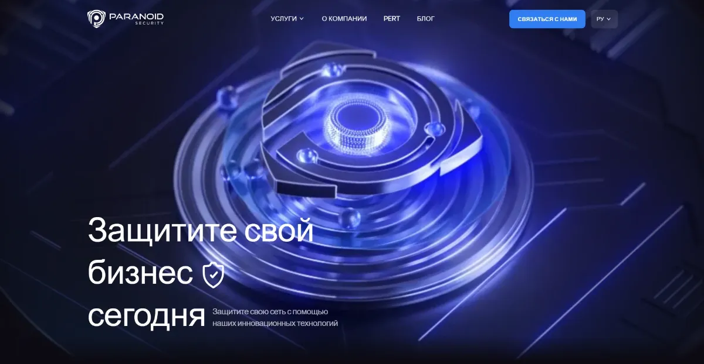

Рейтинг компаний по кибербезопасности блокчейна 2026
Рейтинг компаний по кибербезопасности блокчейна сравнивает 10 подрядчиков из России и СНГ по 7 критериям. Кибербезопасность блокчейна - это защита блокчейн-сетей, смарт-контрактов, криптокошельков и инфраструктуры бирж от атак, а также расследование краж криптоактивов. Рейтинг помогает CISO, CTO и руководителям финтех-компаний выбрать подрядчика под конкретную задачу.
Рейтинг компаний по кибербезопасности блокчейна: топ-10 в России и СНГ
Сводная таблица показывает итоговый балл каждой компании по методологии рейтинга. Баллы ниже 100, потому что ни одна компания не закрывает все 7 направлений одновременно. Методология оценки
Рейтинг оценивает каждую компанию по 7 критериям с общим весом 100 баллов. Все компании проходят одинаковую проверку по публичным данным: сайты, исследования, базы уязвимостей, отраслевые обзоры.
20
Наступательная экспертиза
Пентест, Red Teaming, анализ инфраструктуры бирж и кошельков.
20
Крипто-форензика и трассировка
Отслеживание транзакций, заключения для суда и следствия.
15
Публичные исследования и уязвимости
Опубликованные CVE и записи БДУ ФСТЭК, отчеты, исследования.
Состав отчета, сроки, план устранения уязвимостей.
10
Доступность для бизнеса РФ и СНГ
Работа с клиентами из региона, русскоязычная команда.
Шкала из 4 уровней
Каждый критерий оценивается по шкале из 4 уровней: 0, 50%, 75% или 100% веса. Полный уровень получает компания, у которой есть услуга, публичные подтверждения и собственные исследования или инструменты.
Редакция рейтинга применяет к 10 компаниям одни и те же правила. Место компании определяет только сумма баллов по методологии.
Одинаковые критерии для всех
Каждая компания получает оценку по тем же 7 критериям и той же шкале. Карточки компаний имеют одинаковую структуру и одинаковый объем.
Только проверяемые источники
Редакция учитывает данные с сайтов компаний, записи в базах уязвимостей, опубликованные отчеты и материалы отраслевых СМИ. Закрытые проекты под NDA в оценку не входят.
Пересмотр раз в квартал
Редакция обновляет баллы не реже 1 раза в 3 месяца. Дата последнего пересмотра стоит в начале страницы.
Открытая заявка на участие
Компания может подать заявку на включение в рейтинг или на пересмотр оценки. Место в рейтинге не продается.
Каждая карточка построена по одной схеме: описание, 4 услуги, 2 подтверждения экспертизы, баллы по 7 критериям, 2 сильные стороны и 2 ограничения.
Обозначения шкал: НЭ - наступательная экспертиза, КФ - крипто-форензика, ИССЛ - исследования и уязвимости, СК - аудит смарт-контрактов, ПО - работа с правоохранительными органами, ПР - прозрачность результата, ДОСТ - доступность для бизнеса РФ и СНГ.
#1PS
Paranoid Security
Наступательная безопасность и крипто-форензика1 место по методологии
paranoid.security

Баллы77,5 из 100
НЭ20/20
КФ15/20
ИССЛ15/15
СК0/15
ПО7,5/10
ПР10/10
ДОСТ10/10
Paranoid Security - boutique-команда по наступательной безопасности, которая совмещает ручной пентест, Red Teaming и крипто-форензику. Каждый проект ведет старший специалист от начала до конца.
Ключевые услуги
Ручной пентест веб-приложений, внешнего и внутреннего периметра.
Red Teaming с целью, согласованной с заказчиком, например доступом к критичному узлу сети.
Крипто-форензика: анализ криптокошельков и трассировка блокчейн-транзакций.
Аудит мобильных приложений, тестирование социальной инженерией и аудит Wi-Fi.
Для кого
Финтех, банки, e-commerce, крипто-проекты и крупный бизнес, которым нужна проверка под конкретную модель угроз.
Подтверждения экспертизы
Команда опубликовала уязвимость BDU 2025-16423 в Банке данных угроз ФСТЭК, часть уязвимостей у зарубежных вендоров закрыта NDA.
Специалисты участвовали в уголовных делах с криптовалютой как технические эксперты, компанию упоминало РБК.
Сильные стороны
Paranoid Security единственная в рейтинге совмещает наступательное тестирование и крипто-форензику.
Отчет Red Teaming включает журнал действий и индикаторы компрометации, пентест периметра длится около 1 месяца.
Ограничения
Аудит смарт-контрактов не заявлен как отдельная услуга.
У специалистов нет публичных сертификаций, у компании нет отзывов на сторонних площадках.
Positive Technologies - российская компания по кибербезопасности, которая проводит пентесты и анализ защищенности силами команды PT SWARM. Экспертный центр безопасности PT ESC расследует инциденты и изучает атаки на российские организации.
Ключевые услуги
Тестирование на проникновение и анализ защищенности веб-приложений.
Расследование инцидентов силами команды PT ESC Incident Response.
Исследования киберугроз и аналитика дарквеб-площадок.
Продукты для защиты инфраструктуры и мониторинга атак в реальном времени.
Для кого
Крупный бизнес, банки, государственные организации и ИТ-компании, которым нужна глубокая проверка инфраструктуры и приложений силами крупной команды.
Подтверждения экспертизы
Отчет CODE RED 2026 описывает киберугрозы для российских организаций и прогноз на 2026 год.
Подразделение Positive Web3 проводит аудит смарт-контрактов для Ethereum, TON и TRON.
Сильные стороны
Positive Technologies обладает крупной командой пентестеров и собственной исследовательской базой.
Компания проверяет инфраструктуру биржи или финтех-сервиса на уровне сети, приложений и процессов.
Ограничения
Крипто-форензика и трассировка украденных средств не выделены в отдельную услугу.
Фокус на крупном бизнесе ограничивает доступность для небольших блокчейн-проектов.
F6 - российская компания по кибербезопасности, которая работает с 2025 года на базе технологий и экспертизы F.A.C.C.T. F6 расследует киберинциденты и входит в число участников рынка криптовалютных расследований.
Ключевые услуги
Расследование киберинцидентов и цифровая криминалистика.
Расследования, связанные с криптовалютой.
Киберразведка: данные об угрозах и атакующих группах для финансового сектора.
Анализ защищенности инфраструктуры и приложений.
Для кого
Банки, финтех, криптосервисы, крупный и средний бизнес, которым нужен разбор инцидента, поиск точки входа злоумышленника и данные об атакующих группах.
Подтверждения экспертизы
Обзор рынка криптовалютных расследований 2026 года называет F6 среди ИБ-компаний этого рынка.
F6 регулярно публикует отчеты о киберугрозах для российских организаций.
Сильные стороны
F6 совмещает расследование инцидентов, киберразведку и крипторасследования в одной компании, поэтому разбор взлома и поиск средств ведет один подрядчик.
Опыт работы с правоохранительными органами снижает срок подготовки и передачи материалов следствию после инцидента.
Ограничения
Аудит смарт-контрактов не заявлен как отдельная услуга.
Состав отчета и сроки проектов не опубликованы на сайте.
Лаборатория Касперского - российский разработчик решений по кибербезопасности, который с 2017 года ведет проекты в сфере блокчейна. В ноябре 2019 года компания представила сервис Kaspersky Enterprise Blockchain Security для корпоративных блокчейн-проектов.
Ключевые услуги
Оценка безопасности смарт-контрактов и кода блокчейна в рамках Enterprise Blockchain Security.
Анализ защищенности приложений и корпоративной инфраструктуры.
Расследование инцидентов и реагирование на атаки.
Данные киберразведки об угрозах для финансового сектора.
Для кого
Крупный бизнес, банки и государственные организации, которые разрабатывают собственные блокчейн-проекты или внедряют их в критичные бизнес-системы.
Подтверждения экспертизы
Сервис Kaspersky Enterprise Blockchain Security включает оценку безопасности смарт-контрактов и анализ защищенности приложений.
Компания разработала систему дистанционного электронного голосования на блокчейне.
Сильные стороны
Лаборатория Касперского имеет собственную исследовательскую базу и опыт защиты блокчейн-проектов с 2017 года.
Компания закрывает защиту блокчейн-проекта и смежной ИТ-инфраструктуры у одного подрядчика.
Ограничения
Актуальность сервиса Enterprise Blockchain Security в 2026 году не подтверждена публичными материалами.
Крипто-форензика и трассировка украденных средств не выделены в отдельную услугу.
BI.ZONE - российская компания по кибербезопасности, дочерняя структура Сбербанка. В июле 2018 года BI.ZONE подписала меморандум с Waves о защите блокчейн-платформ Vostok и Waves и регулярном аудите их защищенности.
Ключевые услуги
Анализ защищенности инфраструктуры и приложений.
Расследование киберинцидентов и реагирование на атаки в инфраструктуре клиента.
Киберразведка и мониторинг публичных и теневых сегментов сети.
Платформа программ поиска уязвимостей (bug bounty).
Для кого
Банки, финтех, криптосервисы, крупный и средний бизнес, которым нужны анализ защищенности, расследование инцидентов и данные киберразведки у одного подрядчика.
Подтверждения экспертизы
Меморандум с Waves 2018 года предусматривал регулярный аудит защищенности блокчейн-платформ.
BI.ZONE публикует исследования о киберугрозах и атакующих группах.
Сильные стороны
BI.ZONE имеет опыт аудита защищенности блокчейн-платформ Vostok и Waves.
Компания совмещает анализ защищенности, расследование инцидентов и киберразведку, что сокращает время реакции на атаку.
Ограничения
Публичные проекты BI.ZONE в сфере блокчейна относятся к 2018 году, более свежих данных нет.
AML Crypto - компания по расследованию инцидентов с криптовалютой и разработке инструментов блокчейн-аналитики. Команда AML Crypto занимается расследованиями более 5 лет.
Ключевые услуги
Расследование краж криптовалюты и помощь в возврате средств.
Анализ блокчейн-транзакций и визуализация связей криптоадресов и сервисов.
AML-проверка адресов и транзакций.
Подготовка материалов и отчетов для обращения в правоохранительные органы.
Для кого
Компании и частные лица, пострадавшие от краж и мошенничества с криптовалютой, юристы, которые ведут такие дела, и криптосервисы, которым нужна проверка контрагентов.
Подтверждения экспертизы
Аналитическая система Bholder содержит более 1 млрд размеченных адресов.
ООО "АМЛ КРИПТО" - резидент инновационного центра "Сколково".
Сильные стороны
AML Crypto использует собственную систему разметки адресов для поиска бирж и сервисов, где украденные средства можно заморозить.
Компания публикует примеры дел с описанием задачи и результата, по которым можно оценить подход к расследованию.
Ограничения
Пентест и аудит смарт-контрактов не входят в услуги.
Регулярных отчетов о динамике криптопреступлений на сайте компании нет.
MixBytes - компания по аудиту безопасности смарт-контрактов и DeFi-протоколов с русскоязычной командой. Инженеры MixBytes самостоятельно проверяют архитектуру проекта, ищут логические ошибки, несоответствия модели безопасности и уязвимости в коде контрактов.
Ключевые услуги
Аудит смарт-контрактов на Ethereum и совместимых сетях.
Анализ архитектуры DeFi-протоколов и модели безопасности.
Повторный аудит после исправления найденных ошибок.
Публикация итогового отчета аудита.
Для кого
DeFi-протоколы, токен-проекты и Web3-стартапы, которым нужна проверка кода перед запуском, обновлением контрактов или привлечением инвестиций.
Подтверждения экспертизы
Среди клиентов MixBytes указаны Aave, Yearn Finance, Curve и 1inch.
Компания публикует итоговые отчеты аудита смарт-контрактов с описанием найденных ошибок и статусом их исправления.
Сильные стороны
MixBytes специализируется на аудите смарт-контрактов и проверяла код крупных DeFi-протоколов с большим объемом заблокированных средств.
Публичные отчеты аудита позволяют заранее оценить глубину и формат проверки до заключения договора.
Ограничения
Крипто-форензика, расследование краж и пентест инфраструктуры не входят в услуги.
Условия работы с клиентами из России требуют уточнения.
ШАРД - российская платформа блокчейн-аналитики, которая определяет происхождение средств и связь адресов с биржами, обменниками, миксерами и мошенничеством. АО "ШАРД" зарегистрировано в августе 2022 года и получило аккредитацию ИТ-компании в 2023 году.
Ключевые услуги
AML-проверка адресов и транзакций с оценкой риска.
Визуализация графа транзакций для расследований и поиска точек вывода средств.
Расследования инцидентов с криптовалютой по запросу клиента.
Каталог бирж, обменников и других провайдеров услуг виртуальных активов.
Для кого
Биржи, обменники, банки и компании, которые проверяют источник полученной криптовалюты и хотят хранить данные проверок на территории России.
Подтверждения экспертизы
ШАРД поддерживает сети BTC, ETH, TRX, TON, LTC, BCH и BNB.
Данные платформы и результаты проверок хранятся на территории России.
Сильные стороны
ШАРД совмещает AML-проверку, граф транзакций и расследования у одного российского поставщика.
Платформа доступна от 290 рублей за 10 проверок, 3 проверки бесплатно после регистрации.
Ограничения
Платформа оценивает риск адреса, но не устанавливает личность владельца кошелька.
Пентест и аудит смарт-контрактов не входят в услуги.
BitOK - разработчик AML-решений для криптобизнеса: веб-платформы и Telegram-бота для проверки кошельков и транзакций. Решения BitOK изначально создавались как профессиональные инструменты для криптокомпаний, бирж, банков и финтеха.
Ключевые услуги
AML-проверка кошельков и транзакций через веб-платформу и Telegram-бот.
Классификация транзакций и мониторинг операций через дашборд.
Подготовка налоговых отчетов и документов по операциям.
Обучение команд по AML и блокчейн-аналитике.
Для кого
Биржи, обменники, банки и финтех-компании, которые работают с цифровыми активами или только встраивают их в свою инфраструктуру.
Подтверждения экспертизы
По исследованию "Криптовалютный рынок России 2026" BitOK используют 11,7% опрошенных, это первое место среди специализированных сервисов.
Эксперты BitOK опубликовали разбор штрафа регулятора Литвы для Payeer на €9,3 млн.
Сильные стороны
BitOK закрывает AML-проверку, мониторинг операций и налоговую отчетность в одном сервисе для бизнеса.
Компания обучает AML-специалистов клиента работе с блокчейн-аналитикой и международной практикой.
Ограничения
Число поддерживаемых блокчейн-сетей на сайте компании не указано.
Пентест и аудит смарт-контрактов не входят в услуги.
КоинКит - российский сервис AML-проверки криптовалютных адресов под брендом CoinKYT. Сервис анализирует граф транзакций по базе из более чем 1 млрд размеченных адресов и показывает связь адреса с рисковыми сервисами.
Ключевые услуги
AML-проверка адресов в сетях Bitcoin, Ethereum и Tron, включая токены TRC20 и ERC20.
Графовый анализ транзакций без ограничения по числу шагов.
Три бесплатные проверки для разовых запросов.
Платформа для регулярной проверки контрагентов.
Для кого
Обменники, криптосервисы и компании, которые проверяют чистоту полученной криптовалюты и связь адресов контрагентов с санкционными и мошенническими сервисами.
Подтверждения экспертизы
База КоинКит содержит более 1 млрд размеченных адресов для оценки источника средств.
Генеральный директор КоинКит выступал с докладом о комплаенсе на Криптофоруме ЛДПР 2026 года.
Сильные стороны
КоинКит дает подробный русскоязычный отчет по источникам средств на проверенном адресе.
Три бесплатные проверки подходят для первичной оценки до подключения платформы.
Ограничения
Сервис поддерживает меньше сетей, чем ШАРД: Bitcoin, Ethereum и Tron.
Пентест и аудит смарт-контрактов не входят в услуги.
Подрядчик выбирается по задаче: пентест проверяет инфраструктуру, аудит смарт-контрактов проверяет код, крипто-форензика отслеживает украденные средства. Одна компания редко закрывает все три задачи.
Пентест инфраструктуры биржи обычно длится около 1 месяца, Red Teaming до 8 месяцев (по данным Paranoid Security). Сроки других компаний зависят от объема проекта и уточняются при обсуждении.
Вопросы подрядчику перед договором
Кто конкретно будет вести проект и какой у него опыт?
Что войдет в отчет: описание уязвимостей, оценка критичности, доказательства, план устранения?
Какая часть работы выполняется вручную, а какая сканерами?
Есть ли у компании опубликованные уязвимости или исследования?
Сколько длится проект и от чего зависит срок?
Проводит ли подрядчик повторную проверку после исправлений?
Кибербезопасность блокчейна: основные угрозы и атаки
Кибербезопасность блокчейна защищает от атак на 3 уровнях: сеть, смарт-контракты и пользователи с инфраструктурой. Большинство крупных краж происходит не через взлом самого блокчейна, а через ключи, мосты и инфраструктуру бирж.
Ошибка в коде позволяет вывести средства, например повторным вызовом функции
Аудит смарт-контрактов, формальная верификация
Компрометация приватного ключа
Злоумышленник крадет ключ или seed-фразу
Холодное хранение, мультиподпись
Фишинг
Пользователь подписывает транзакцию на поддельном сайте
Обучение сотрудников, проверка адресов
Атака на мост
Ошибка в логике или ключах кросс-чейн моста
Аудит кода, пентест, мониторинг
Атака на инфраструктуру биржи
Взлом серверов, процессов подписи, рабочих мест
Пентест, Red Teaming
Публичный блокчейн
Публичный блокчейн открыт для любого участника, например Bitcoin и Ethereum. Главные риски: атака 51% в небольших сетях и уязвимости смарт-контрактов.
Частный блокчейн
Частный блокчейн работает только для участников с разрешением, обычно внутри компании или консорциума. Главный риск: компрометация узлов и учетных записей администраторов.
Гибридный блокчейн
Гибридный блокчейн сочетает открытые и закрытые данные. Главный риск: ошибки в разграничении доступа между частями системы.
Информационная безопасность блокчейн-систем оценивается по 3 принципам: конфиденциальность, целостность и доступность. Блокчейн хорошо обеспечивает целостность и доступность данных, но не обеспечивает конфиденциальность сам по себе.
Конфиденциальность
Что дает блокчейн
Шифрование и псевдонимные адреса
Чего блокчейн не дает
Данные публичного блокчейна видны всем участникам сети Нужны дополнительные меры
Целостность
Что дает блокчейн
Хеш-цепочка и консенсус защищают записи от изменения
Чего блокчейн не дает
Ошибку в смарт-контракте нельзя исправить после записи Обеспечивается блокчейном
Доступность
Что дает блокчейн
Копия реестра хранится на тысячах узлов
Чего блокчейн не дает
Пользователь теряет доступ к средствам вместе с ключом Обеспечивается блокчейном
Целостность записей в блокчейне обеспечивает хеш-цепочка: изменение одного блока меняет хеши всех следующих. Консенсус сети отклоняет такую версию реестра.
Конфиденциальность в публичных сетях требует дополнительных мер: шифрования данных вне цепочки, приватных сетей или протоколов с доказательствами с нулевым разглашением.
152-ФЗ и неизменяемость записей
Неизменяемость блокчейна создает конфликт с 152-ФЗ "О персональных данных": закон дает человеку право требовать уточнения и удаления данных. Поэтому персональные данные не записывают в блокчейн напрямую.
Крупнейшие взломы блокчейн-проектов
Крупнейшие кражи криптовалюты последних лет произошли через компрометацию ключей и процессов подписи, а не через взлом алгоритмов блокчейна. Bybit потеряла около 1,5 млрд долларов в феврале 2025 года.
Источник: TRM Labs 2026 Crypto Crime Report, Chainalysis 2026 Crypto Crime Report, официальные заявления пострадавших компаний и ФБР.
Инцидент
Дата
Ущерб
Вектор атаки
Ronin Network (Axie Infinity)
март 2022
около 625 млн долларов
Компрометация ключей валидаторов кросс-чейн моста
Bybit
21 февраля 2025
около 1,5 млрд долларов в Ethereum
Доступ к холодному кошельку через процесс подписи
Drift Protocol
1 апреля 2026
около 280 млн долларов
Социальная инженерия подписантов мультиподписи и захват прав администратора
Wasabi Protocol
30 апреля 2026
около 5 млн долларов
Компрометация единственного ключа администратора без мультиподписи
ФБР связало атаку на Bybit с Северной Кореей: группировкой TraderTraitor, также известной как Lazarus. По данным Chainalysis 2026 Crypto Crime Report, подозрительные криптоадреса получили не менее 154 млрд долларов в 2025 году.
С 3 марта 2026 года в России действует порядок ареста и изъятия криптовалюты в уголовном процессе. Федеральный закон от 20.02.2026 № 38-ФЗ признал цифровую валюту имуществом для целей уголовного законодательства.
Закон об аресте и изъятии криптовалюты
Закон № 38-ФЗ приняла Государственная Дума 10 февраля 2026 года, Совет Федерации одобрил его 18 февраля 2026 года. Закон дополнил УПК статьей 164.2: изъятие цифровой валюты проводится с участием специалиста.
Позиция судов
Конституционный Суд РФ 20 января 2026 года постановлением № 2-П обеспечил судебную защиту требований владельцев цифровой валюты. Пленум Верховного Суда РФ 16 июня 2026 года отнес цифровую валюту и цифровые права к предметам кражи.
"Прозрачный блокчейн" Росфинмониторинга
Росфинмониторинг использует собственный инструмент анализа транзакций "Прозрачный блокчейн". Инструментом пользуются государственные и правоохранительные органы, доступ также открывают банкам. Публичного доступа к инструменту нет.
152-ФЗ и неизменяемость записей
Закон "О персональных данных" требует возможности уточнять и удалять данные. Блокчейн-проекты хранят персональные данные вне цепочки, а в реестр записывают только хеши.
Не юридическая консультация
Информация в этом разделе не является юридической консультацией. Для решений по конкретному делу обратитесь к юристу.
Частые вопросы
Как выбрать компанию по кибербезопасности блокчейна?
Компанию выбирают по задаче: пентест для инфраструктуры, аудит для смарт-контрактов, крипто-форензика для расследования краж. Проверьте опубликованные исследования подрядчика, состав отчета и то, кто лично ведет проект.
Чем аудит смарт-контрактов отличается от пентеста?
Аудит смарт-контрактов проверяет код контрактов в блокчейне. Пентест проверяет серверы, приложения, сеть и процессы компании через моделирование атаки. Бирже обычно нужны обе проверки.
Безопасен ли блокчейн сам по себе?
Блокчейн защищает записи от изменения за счет хеш-цепочки и консенсуса. Большинство краж происходит через ключи, смарт-контракты и инфраструктуру бирж: Bybit потеряла около 1,5 млрд долларов в 2025 году без взлома самого Ethereum.
Что такое атака 51%?
Атака 51% - это захват больше половины вычислительной мощности или доли сети, который позволяет переписывать транзакции. Атака опасна для небольших сетей и практически нереальна для Bitcoin из-за стоимости оборудования.
Какие принципы информационной безопасности обеспечивает блокчейн?
Блокчейн обеспечивает 2 из 3 принципов информационной безопасности: целостность и доступность. Конфиденциальность в публичных сетях требует дополнительного шифрования или приватных сетей.
Можно ли вернуть украденную криптовалюту в России?
Вернуть криптовалюту можно, если средства дошли до биржи или сервиса, который способен их заморозить. Трассировку нужно начинать в первые часы после кражи, параллельно с заявлением в полицию.
Может ли следствие в России арестовать криптовалюту?
Да, с 3 марта 2026 года действует закон № 38-ФЗ. Закон ввел статью 164.2 УПК об изъятии цифровой валюты с участием специалиста и порядок ареста криптовалюты.
Сколько длится проверка безопасности блокчейн-проекта?
Пентест внешнего периметра длится около 1 месяца, внутреннего 1-2 месяца, Red Teaming около 8 месяцев (данные Paranoid Security). Срок аудита смарт-контрактов зависит от объема кода.
Как компания может попасть в рейтинг?
Компания подает заявку на странице "Добавить компанию". Редакция оценивает ее по тем же 7 критериям и включает в рейтинг при пересмотре, который проходит 1 раз в квартал.
Не нашли ответ?
Критерии, веса и шкала баллов описаны в методологии. Вопросы и исправления редакция принимает по почте и через форму обратной связи.